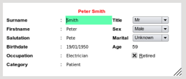

|  |
- birthdate This needs to be entered either as dd/mm/yyy or any similar combination eg 9/9/53 or 09/9/1953. If the program cannot
convert your input to a date you will be re-prompted until the data is valid
- Salutation It is surprising how many people do not know this term - it means how the person likes to be addressed for example
sometimes a person may have disliked their firstname e.g Gladys and has always used their middle name e.g Kathryn, so
the salutation field would be Kathryn.
|